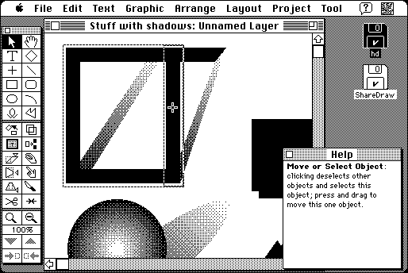

Download
ShareDraw2.02.zip (1.2M) ShareDraw 2.01 repackaged into a zipped hfs disk image and checksum file. The disk image can be mounted with Mini vMac.
ShareDraw2.02.sit.hqx (1.7M) ShareDraw 2.01 in the original format.
copyright: Michael Everest
mod date: Apr 28, 1996
license: shareware
last known url
(gone)
A "full featured drawing application", for "System 6.07 or later".

If you find these downloads useful, please consider helping the Gryphel Project, which hosts them.
Here are the md5 checksums for the downloads, signed with Gryphel Key 5:
--------- GRY SIGNED TEXT --------- bf8c569def4aa6f13d6761d83ba5a4c9 ShareDraw2.02.zip f4808f8dd7f11d97d357d7e798235a2b ShareDraw2.02.sit.hqx ------- BEGIN GRY SIGNATURE ------- Gry/4Xa8CFcUzxdN/DCwEy17VX86a3qSnxNsyWHvJge/8YFkl2xvQcj8a0cHtLuw U3Ab0kYJFWZy2Z4fnk0lHHfslDMypYvEl2cfF7cyUaYqw8sJhDH2taayGTBbcJlE ODn/JTyyfr7GJ6QRboXrTSjsC8VwGb7kukhAjqWI9O7fjVA0eD9h5GNEDtKQiYrH -------- END GRY SIGNATURE --------